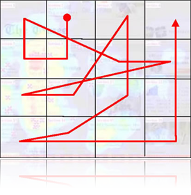
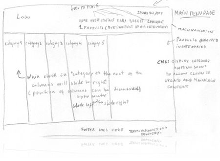
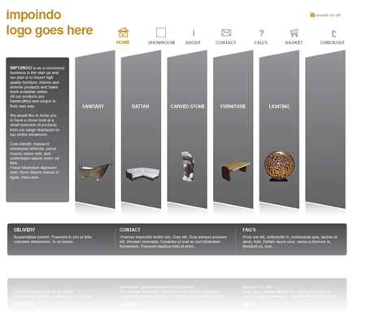
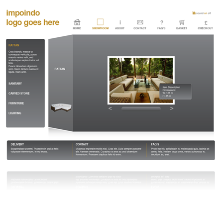
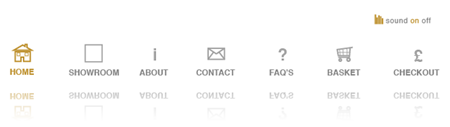
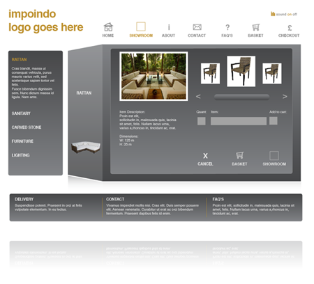

Design and Critical Evaluation of an Interface
In this assessment I will evaluate the use of visual elements on a website interface. In particular, I want to show how elements such as line, shape, colour, contrast, images, and graphics are used to impact the experience of the user.
Following further exploration and research of ideas introduced in lectures and tutorial classes, I have chosen to illustrate the role of visual elements in an interface via a website which I’m currently designing for a client.
The visual interface I have chosen is for Impoindo.
Impoindo will be an online shop offering high quality architectural exterior and interior products imported from Indonesia.
The client initially made attempts to create a layout design but struggled to encompass all the elements required to make a coherent and stylish website.
I was able to identify their ideas and follow these through by combining elements of successful e-commerce business and design.
I applied some of the recommendations learnt in this module to see if the principles I had researched would make any visible improvement. One such example is the comparative use of colour between an early draft ( Image 3 ) and the later version ( Image 5 ).
Initially, the colour palette used a variation of earthy tones against a white background. This combination gave the appearance of being dull and lifeless. To combat this, more contrast was required so instead of a variety of block-shaped earthy tones, I contrasted the images of the products with grey gradient, which picked out the earthy tones of the images.
Upon first meeting with the client, I grasped an understanding of the clients’ goals and purpose for the website. The purpose of the website is to provide a user-friendly and stimulating shopping experience to visitors, allowing easy navigation, product selection and online checkout.
The website’s visual design should be aesthetically pleasing, contemporary, stimulating and uncomplicated, enticing the visitor to browse the site and invite purchases based on product range and information. The look of the site should reflect the high-quality and craftsmanship of the product and meet the expectation of customer’s buying products in the intended price category.
The client also clarified that the main target audience for this site is middle class professionals earning around 40k-60k year with a high level of disposable income.
As this site is an e-commerce website, and the only business root of the client, it is important to make a lasting impression that will entice the viewer to explore the website, regularly return to browse and shop at Impoindo and pass on positive information about their shopping experience to family, friends and colleagues. Therefore, the site will have to be extremely attractive to engage and motivate potential clients to interact with the interface in an efficient, effective and enjoyable way.
The visual design for this interface covers three fundamental aspects:
Branding
Branding is much more than visual design and plays a fundamental part in creating immediate visual recognition of an e-commerce business. Branding and identity of a business is vital to determining the website look and feel. A successful brand identity will provoke an emotional response from the viewer and usually involves the use of colour, shape, type, texture, space, images and logos.
Taking into account the target audience, the ethnic origins of the product and identity of the company I designed several prototype logos, these were then refined and given to the client for approval. I am currently awaiting the client’s approval and for this reason have chosen not to display the logo.
As one of the purposes of this e-commerce website is to provide a stimulating shopping experience, I recommended integrating elements of animation and sound into the site, enabling users to have a fuller and more engaging experience with Impoindo’s brand.
In this interface I have chosen to use sufficient white space and low-toned visuals, contrasting with animation and simple interface elements, which enhance and build on the brand’s sophisticated appeal.
Layout
Layout involves the organisation of elements on the page, the use of balance, proportion, hierarchy and emphasis.
The layout and hierarchy of this interface focus on the relationship between all the elements on the page, making use of the white space, using the same fonts but different font sizes, colour and position of objects on the page.
I have chosen large text at the top of the page, where the menu section will be located, to immediately capture the user’s attention and define the navigation so that it is clear and uncomplicated.
The middle of the screen is another area where users initially focus their attention, so I have chosen to insert vital information into this position.
Studies show where users focus their attention when they look at a screen.

Image 1 - Typical eye tracking movements on a web page
(Outing, S. Ruel, L. 2004)
Initially, I sketched the layout on paper and decided to create a 3-grid layout, with header, main content and footer respectively.

Image 2 - Sketches

Image 3 - First draft
The header contains the Impoindo logo on the left side, and the main menu on the centre/right, located above the main content. This header will be consistent throughout the site.
In later layout drafts, I added icons on top of the menu navigation to enable better user recognition of symbols and make it easier to navigate. I also added the sound element on the right side (aligned with the logo) in an easily locatable position, therefore easy to switch on/off.
The main content is broken down into two categories: Description and Products. On the home page, the Description category provides short information about the company. On the other pages it will provide information about the product selected.
The Products category displays a visual representation of the product selection (showroom). The design provides an enriching experience by guiding the user through the product’s range whilst enabling the user to actively participate by selecting their product category. The footer provides information and help for those who need support.
Some reorganisation of the information about product and company was required to offer better definition between the two. For example, I added a vertical sidebar on the left side of each page with a short description of the company’s nature, rather than only on the ABOUT US page. This sidebar will contain a description of each product.
I also replaced the original footer (sub navigation) with Delivery, Contact, and Frequently Asked Questions (FAQ) links and placed them in the horizontal sidebar at the bottom of each page. The side bar became a series of grey fields separated by yellow line that helped draw attention to information that users may need.
The next step was to determinate a colour scheme.
Image 4 - Colour scheme
I selected these four colours from a palette inspired by ethnic/Eastern earth colours. This was discussed with the client and it was agreed that two colours would be selected for the website.
To distinguish from the grey of the main content, I chose a yellow/orange colour in the logo. The menu will be in grey to contrast to the white background, then will be yellow/orange on the selected page, and highlighted in the same colour when the mouse rolls-over.
I have chosen these two colours since yellow/orange is linked with comfort, happiness and calming energy whereas grey represents elegance and conveys an impression of style. These colours are appealing both to men and women.
For the text, I have chosen a sans serif font type to enable ease of reading. The font is white to contrast with the dark-grey background.
Next, I focused on the images. Most of the images that the client gave me had to be manipulated in Photoshop to give them a fresher and more appealing look.
For the main page, I used some of these manipulated images to identify each product category, allowing the user easy to identify the respective product category. Each category/image is exposed in a column which has effects applied to it, like reflections, to maintain the harmony of the website.

Image 5 - Recent draft

Image 6 - Product Category - Showroom
Controls
‘Graphic user interfaces incorporate visual and functional metaphors drawn from the world of everyday experience to help orient the computer user to the possibilities and functions of the computer system. By emulating the look and behaviour of familiar, concrete screen objects such as file folders, paper documents, tools, or trash cans the functions of the computer system are made visible and placed into a logical, predictable context’. (Lynch, P. 1994)
Icons, buttons and other elements visually suggest how to interact with the system. The interface should respond to the user’s actions, visually displaying and giving meaning to the way a user is interacting with the system.
For ease of use, this interface benefits from being predictable – I used standard visual elements so users recognised what they represented and would not need to spend hours trying to work out how to use the system.

Image 7 - Controls and Icons

Image 8 - Product description
Evaluation
Design is the communication of concepts and ideas. On the web, success is often measured by how quickly and effectively ideas are communicated to the user. Development of a commercial website should be driven by content and functionality whilst the look and feel should be intrinsically linked to the brand identity. The content becomes meaningful information when it is related to its environment and purpose of the site.
The development of my knowledge and skills throughout this module has been reflected in the development of this website. Improvements in my design skills have translated to continually improved versions of the website. From a personal design point of view, I am happy with this website and the direction it has gone in. More importantly, the website now better meets the client’s needs and specifications.
References
Lynch, P. 1994, Visual Design For The User Interface, Part 1: Design Fundamentals [online], Yale Center for Advanced Instructional Media, Journal of Biocommunications, p.1, Available from: https://www-rz.uni-hohenheim.de/www/styleguides/manual/papers/gui1.html [Accessed: 18.12.2008]
Outing, S. Ruel, L. 2004, EYETRACK III - What we saw when we looked through their eyes [online], Available from: http://www.poynterextra.org/eyetrack2004/main.htm [Accessed: 18.12.2008]